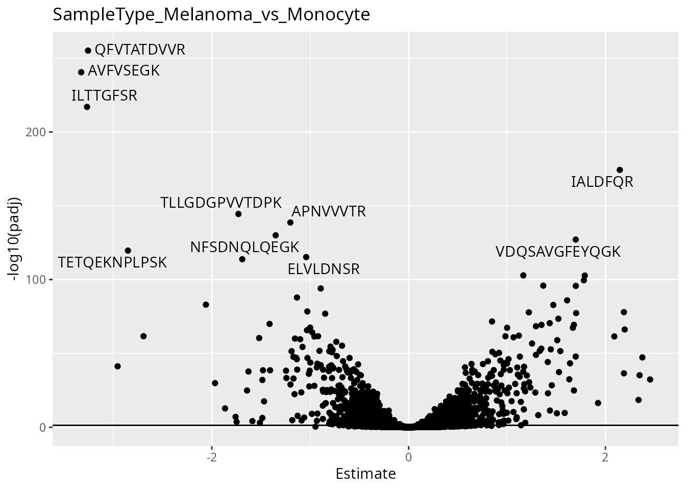
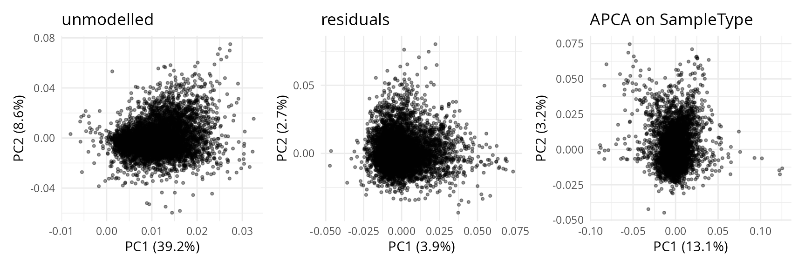

scplainer: reanalysis of the nPOP dataset (Leduc et al. 2022)
Christophe Vanderaa1, Computational Biology, UCLouvain
Laurent Gatto, Computational Biology, UCLouvain
10 November 2023
scplainer_leduc2022.RmdIntroduction
In this vignette, we will analyse the leduc2022_pSCoPE
dataset. The data were acquired using the nPOP acquisition protocole.
nPOP (Leduc et
al. 2022) is an upgrade of the SCoPE2 protocol (Specht et
al. 2021 and Petelski et
al. 2021), where the mPOP sample preparation method is replaced by
the nPOP method. nPOP processes samples using the Cellenion dispensing
device and uses DMSO as lysis reagent instead of a freeze-thaw
procedure. They also include the prioritised data acquisition mode as
described by Huffman et
al. 2022. Single cells were labelled with TMT-18 and MS data were
acquired in prioritised DDA mode.
Packages and data
We rely on several packages to compile this vignette.
## Core packages
library("scp")
library("scpdata")
## Utility packages
library("ggplot2")
library("patchwork")
library("ensembldb")
library("EnsDb.Hsapiens.v86")
library("dplyr")
library("bluster")
library("scater")The data set is available from the scpdata package.
leduc <- leduc2022_pSCoPE()
## see ?scpdata and browseVignettes('scpdata') for documentation
## loading from cacheThe data set primarily consists of melanoma cells and monocytes. The
data set also contains carrier samples, negative control samples,
reference samples and empty wells (Unused).
table(leduc$SampleType)
##
## Carrier Melanoma Monocyte Negative Reference Unused
## 134 878 877 120 134 269The data were acquired using TMT-18 labelling.
levels(leduc$Channel)
## [1] "TMT126" "TMT127N" "TMT127C" "TMT128N" "TMT128C" "TMT129N" "TMT129C"
## [8] "TMT130N" "TMT130C" "TMT131N" "TMT131C" "TMT132N" "TMT132C" "TMT133N"
## [15] "TMT133C" "TMT134N" "TMT134C" "TMT135N"The data were acquired as part of 134 MS acquisition batches.
length(unique(leduc$Set))
## [1] 134
cat(head(leduc$Set), "...", tail(leduc$Set))
## eAL00219 eAL00219 eAL00219 eAL00219 eAL00219 eAL00219 ... wAL00286 wAL00286 wAL00286 wAL00286 wAL00286 wAL00286Finally, samples were prepared with the nPOP protocol using 2 glass
slides. The information is stored under lcbatch.
table(leduc$lcbatch)
##
## A C
## 1548 864Minimal data processing
The minimal data processing workflow consist of 5 main steps:
- Data cleaning
- Feature quality control
- Sample quality control
- Peptide data assembly
- Log2-transformation
Cleaning data
We remove the assays that were processed by the authors. The vignette only uses the data generated by Maxquant.
assaysToRemove <- c("peptides", "peptides_log", "proteins_norm2", "proteins_processed")
leduc <- removeAssay(leduc, assaysToRemove)
## Warning: 'experiments' dropped; see 'drops()'
## harmonizing input:
## removing 6185 sampleMap rows not in names(experiments)We remove feature annotations that won’t be used in the remainder of the vignette. This is to avoid overcrowding of the annotation tables later in the vignette.
requiredRowData <- c(
"Sequence", "Leading.razor.protein.symbol",
"Leading.razor.protein.id", "Reverse", "Potential.contaminant",
"Leading.razor.protein", "PIF", "dart_qval"
)
leduc <- selectRowData(leduc, requiredRowData)We replace zeros by missing values. A zero may be a true (the feature
is not present in the sample) or because of technical limitations (due
to the technology or the computational pre-processing). Because we are
not able to distinguish between the two, zeros should be replaced with
NA.
Feature quality control
We remove low-quality PSMs that may propagate technical artefacts and bias data modelling. The quality control criteria are:
- We remove contaminants and decoy peptides.
- We remove PSMs with low spectral purity.
- We remove low-confidence peptides, as defined by the false discovery rate (FDR) computed by the DART-ID algorithm.
- We remove PSMs for which the signal in single-cell samples exceeds 5% of the signal in 100-cell samples, i.e. the carrier.
All the criteria were readily computed except for the single cell to
carrier ratio. We compute this using computeSCR(). The
results are stored in the rowData.
leduc <- computeSCR(
leduc, names(leduc), colvar = "SampleType",
samplePattern = "Mel|Macro", carrierPattern = "Carrier",
sampleFUN = "mean", rowDataName = "MeanSCR"
)Here is an overview of the distributions of each criteria
## `stat_bin()` using `bins = 30`. Pick better value with `binwidth`.
## Warning: Removed 181437 rows containing non-finite values
## (`stat_bin()`).
## `stat_bin()` using `bins = 30`. Pick better value with `binwidth`.
## `stat_bin()` using `bins = 30`. Pick better value with `binwidth`.
## Warning: Removed 205172 rows containing non-finite values
## (`stat_bin()`).We filter and keep the features that pass the quality control criteria.
leduc <- filterFeatures(
leduc, ~ Reverse != "+" &
Potential.contaminant != "+" &
!grepl("REV|CON", Leading.razor.protein) &
!is.na(PIF) & PIF > 0.6 &
dart_qval < 0.01 &
!is.na(MeanSCR) & MeanSCR < 0.05
)
## 'Reverse' found in 134 out of 134 assay(s)
## 'Potential.contaminant' found in 134 out of 134 assay(s)
## 'Leading.razor.protein' found in 134 out of 134 assay(s)
## 'PIF' found in 134 out of 134 assay(s)
## 'dart_qval' found in 134 out of 134 assay(s)
## 'MeanSCR' found in 134 out of 134 assay(s)Sample quality control
Similarly to the features, we also remove low-quality cells. The quality control criteria are:
- We remove samples with low number of detected peptides. The criterion is computed as follows:
leduc <- countUniqueFeatures(
leduc, i = names(leduc), groupBy = "Sequence",
colDataName = "NumberPeptides"
)- We remove samples with low median intensity. The metric (note we will later use it for normalization) is computed as follows:
MedianIntensity <- lapply(experiments(leduc), function(x) {
out <- colMedians(log(assay(x)), na.rm = TRUE)
names(out) <- colnames(x)
out
})
names(MedianIntensity) <- NULL
MedianIntensity <- unlist(MedianIntensity)
colData(leduc)[names(MedianIntensity), "MedianIntensity"] <- MedianIntensity- We remove the samples that have a high median coefficients of variation (CV). The CV is computed within each sample, by grouping the peptides that belong to the same protein or protein group. This is computed as follows:
leduc <- medianCVperCell(
leduc, i = names(leduc), groupBy = "Leading.razor.protein.symbol",
nobs = 3, na.rm = TRUE, colDataName = "MedianCV", norm = "SCoPE2"
)
## Warning in medianCVperCell(leduc, i = names(leduc), groupBy = "Leading.razor.protein.symbol", : The median CV could not be computed for one or more samples. You may want to try a smaller value for 'nobs'.- We also remove the samples that are not single cells because we will no longer need them.
We plot the metrics used to perform sample quality control.
ggplot(data.frame(colData(leduc))) +
aes(
y = MedianIntensity,
x = NumberPeptides,
color = MedianCV,
shape = SampleType
) +
geom_point(size = 2) +
scale_color_continuous(type = "viridis")
## Warning: Removed 2 rows containing missing values (`geom_point()`).We apply the filter and keep only single cells that pass the quality control.
Peptide data assembly
For now each MS acquisition run is stored separately in an assay. We here combine these assays in one. The issue is that PSMs are specific to each run. We therefore aggregate the PSMs to peptides.
peptideAssays <- paste0("peptides_", names(leduc))
leduc <- aggregateFeatures(leduc,
i = names(leduc),
fcol = "Sequence",
name = peptideAssays,
fun = colMedians,
na.rm = TRUE)Next to that, we must adapt the peptide to protein mapping. When
joining all assay, we will only keep the feature annotations that have
the common data. However, some peptide sequences map to one protein in
one run and to another protein in another run. Hence, the protein name
is not constant for all peptides and is removed during joining. It is
important we keep the protein sequence in the rowData, in
case we later want to aggregate, model or infer protein level
quantification.
ppMap <- rbindRowData(leduc, i = grep("^pep", names(leduc))) %>%
data.frame %>%
group_by(Sequence) %>%
## The majority vote happens here
mutate(Leading.razor.protein.symbol =
names(sort(table(Leading.razor.protein.symbol),
decreasing = TRUE))[1],
Leading.razor.protein.id =
names(sort(table(Leading.razor.protein.id),
decreasing = TRUE))[1]) %>%
dplyr::select(Sequence, Leading.razor.protein.symbol, Leading.razor.protein.id) %>%
dplyr::filter(!duplicated(Sequence, Leading.razor.protein.symbol))
consensus <- lapply(peptideAssays, function(i) {
ind <- match(rowData(leduc)[[i]]$Sequence, ppMap$Sequence)
DataFrame(Leading.razor.protein.symbol =
ppMap$Leading.razor.protein.symbol[ind],
Leading.razor.protein.id =
ppMap$Leading.razor.protein.id[ind])
})
names(consensus) <- peptideAssays
rowData(leduc) <- consensusThe data can now be joined.
leduc <- joinAssays(leduc, i = peptideAssays,
name = "peptides")Finally, we also convert uniprot protein identifier to gene symbols.
proteinIds <- rowData(leduc)[["peptides"]]$Leading.razor.protein.id
proteinConversionDf <- transcripts(
EnsDb.Hsapiens.v86,
columns = "gene_name",
return.type = "data.frame",
filter = UniprotFilter(proteinIds)
)
matchedIndex <- match(proteinIds, proteinConversionDf$uniprot_id)
geneName <- proteinConversionDf$gene_name[matchedIndex]
rowData(leduc)[["peptides"]]$gene <- geneNameLog-transformation
We log2-transform the quantification data.
leduc <- logTransform(leduc, i = "peptides", name = "peptides_log")Here is an overview of the data processing:
plot(leduc)
## Warning in plot.QFeatures(leduc): The QFeatures object contains many assays.
## You may want to consider creating an interactive plot (set 'interactive =
## TRUE')Data modelling
Model the data using the linear regression model implemented in
scp. The model is applied on a
SingleCellExperiment so we extract it from the processed
data set along with the colData
sce <- getWithColData(leduc, "peptides_log")First, we must specify which variables to include in the model. We here include 4 variables:
-
MedianIntensity: this is the normalization factor used to correct for cell-specific technical differences. -
Channel: this is used to correct for TMT effects. -
Set: this is used to perform batch correction. We consider each acquisition run to be a batch. -
SampleType: this is the biological variable of interest. It capture the difference between macrophages and monocytes
scpModelWorkflow() fits linear regression models to the
data, where the model is adapted for each peptide depending on its
pattern of missing values.
sce <- scpModelWorkflow(
sce,
formula = ~ 1 + ## intercept
## normalization
MedianIntensity +
## batch effects
Channel + Set +
## biological variability
SampleType
)Once the model is prepared, we can explore the distribution of the n/p ratios.
scpModelFilterThreshold(sce) <- 3
scpModelFilterPlot(sce)
## To change the threshold, use:
## scpModelFilterThreshold(object, name) <- thresholdMany peptides do not have sufficient observations to estimate the model. We have chosen to continue the analysis with peptides that have \(n/p >= 3\). You could consider \(n/p\) a rough average of the number of replicates per parameter to fit (for categorical variables, the number of replicates per group). We recommend moving the threshold away from 1 to increase statistical power and remove noisy peptides. This comes of course at the cost of less peptides included in the analysis.
Model analysis
The model analysis consists of three steps:
- Variance analysis
- Differential abundance analysis
- Component analysis
Variance analysis
The variance analysis explores the proportion of data captures by each variable in the model.
(vaRes <- scpVarianceAnalysis(sce))
## DataFrameList of length 5
## names(5): Residuals MedianIntensity Channel Set SampleType
vaRes[[1]]
## DataFrame with 6854 rows and 4 columns
## feature SS df percentExplainedVar
## <character> <numeric> <numeric> <numeric>
## 1 GTLVQTK 428.956 1502 15.58356
## 2 NSNPALNDNL... 350.165 1357 25.62569
## 3 ITVTSEVPFS... 273.791 1365 22.35432
## 4 LVLVGDGGTG... 242.713 1471 9.67771
## 5 LVAQLYK 361.345 1175 36.60871
## ... ... ... ... ...
## 6850 LIHPDEDISL... 75.4117 290 22.2277
## 6851 MQEHSDQVPV... 125.2367 494 45.1561
## 6852 HGAEVIDTPV... 38.6879 126 58.5003
## 6853 TETQEKNPLP... 404.3668 790 14.5120
## 6854 TLTTVQGIAD... 77.5062 253 66.6051The results are a list of tables, one table for each variable. Each
table reports for each peptide the variance captures (SS),
the residual degrees of freedom for estimating the variance
(df) and the percentage of total variance explained
(percentExplainedVar). To better explore the results, we
add the annotations available in the rowData.
vaRes <- scpAnnotateResults(
vaRes, rowData(sce), by = "feature", by2 = "Sequence"
)By default, we explore the variance for all peptides combined:
scpVariancePlot(vaRes)
We explore the top 20 peptides that are have the highest percentage of variance explained by the biological variable (top) or by the batch variable (bottom).
scpVariancePlot(
vaRes, top = 20, by = "percentExplainedVar", effect = "SampleType",
decreasing = TRUE, combined = FALSE
) +
scpVariancePlot(
vaRes, top = 20, by = "percentExplainedVar", effect = "Set",
decreasing = TRUE, combined = FALSE
) +
plot_layout(ncol = 1, guides = "collect")We can also group these peptide according to their protein. We simply
need to provide the fcol argument.
scpVariancePlot(
vaRes, top = 20, by = "percentExplainedVar", effect = "SampleType",
decreasing = TRUE, combined = FALSE, fcol = "gene"
) +
scpVariancePlot(
vaRes, top = 20, by = "percentExplainedVar", effect = "Set",
decreasing = TRUE, combined = FALSE, fcol = "gene"
) +
plot_layout(ncol = 1, guides = "collect")Differential abundance analysis
Next, we explore the model output to understand the differences
between melanoma cells and monocytes. The difference of interest is
specified using the contrast argument. The first element
points to the variable to test and the two following element are the
groups of interest to compare. You can provide multiple contrast in a
list.
(daRes <- scpDifferentialAnalysis(
sce, contrast = list(c("SampleType", "Melanoma", "Monocyte"))
))
## List of length 1
## names(1): SampleType_Melanoma_vs_Monocyte
daRes[[1]]
## DataFrame with 6854 rows and 7 columns
## feature Estimate SE Df tstatistic pvalue
## <character> <numeric> <numeric> <numeric> <numeric> <numeric>
## 1 GTLVQTK -0.2348267 0.0461710 1502 -5.08602 4.11671e-07
## 2 NSNPALNDNL... -0.2964675 0.0476322 1357 -6.22410 6.44196e-10
## 3 ITVTSEVPFS... 0.1699631 0.0422754 1365 4.02038 6.12828e-05
## 4 LVLVGDGGTG... -0.0575517 0.0359411 1471 -1.60128 1.09529e-01
## 5 LVAQLYK 0.2392563 0.0586715 1175 4.07790 4.85057e-05
## ... ... ... ... ... ... ...
## 6850 LIHPDEDISL... 0.1568293 0.1001117 290 1.566543 1.18312e-01
## 6851 MQEHSDQVPV... -0.0352213 0.0803697 494 -0.438241 6.61403e-01
## 6852 HGAEVIDTPV... 0.0925308 0.1753991 126 0.527545 5.98743e-01
## 6853 TETQEKNPLP... -2.8525348 0.1002023 790 -28.467765 3.09874e-123
## 6854 TLTTVQGIAD... 0.1569952 0.1299189 253 1.208409 2.28018e-01
## padj
## <numeric>
## 1 3.30397e-06
## 2 6.93142e-09
## 3 3.63979e-04
## 4 2.69653e-01
## 5 2.91886e-04
## ... ...
## 6850 2.84930e-01
## 6851 8.40398e-01
## 6852 8.01521e-01
## 6853 2.35986e-120
## 6854 4.57104e-01Similarly to variance analysis, the results are a list of tables, one
table for each contrast. Each table reports for each peptide the
estimated difference between the two groups, the standard error
associated to the estimation, the degrees of freedom, the t-statistics,
the associated p-value and the p-value FDR-adjusted for multiple testing
across all peptides. Again, to better explore the results, we add the
annotations available in the rowData.
daRes <- scpAnnotateResults(
daRes, rowData(sce),
by = "feature", by2 = "Sequence"
)We then visualize the results using a volcano plot. The function below return a volcano plot for each contrast.
scpVolcanoPlot(daRes)
## $SampleType_Melanoma_vs_Monocyte
To help interpretation of the results, we will label the peptides with their protein name. Also we increase the number of labels shown on the plot. Finally, we can add colors to the plot. For instance, let’s explore the impact of the number of observations using the \(n/p\) ratio. We create a new annotation table, add it to the results and redraw the plot. The \(n/p\) ratio is retrieved using scpModelFilterNPRatio
np <- scpModelFilterNPRatio(sce)
daRes <- scpAnnotateResults(
daRes, data.frame(feature = names(np), npRatio = np),
by = "feature"
)
scpVolcanoPlot(
daRes, top = 30, textBy = "gene",
pointParams = list(aes(colour = npRatio))
)
## $SampleType_Melanoma_vs_MonocyteAs expected, higher number of observations (higher \(n/p\)) lead to increased statistical power and hence to more significant results.
Proteins such as VIM, LGALS3, CALU, LMNA, CTTN, are more abundant in melanoma cells compared to monocytes. On the other hand, proteins such as LCP1, CORO1A, ARHGDIB, TMSB4X are more abundant in monocytes compared to melanoma cells.
Finally, we offer functionality to report results at the protein level.
scpDifferentialAggregate(daRes, fcol = "gene") |>
scpVolcanoPlot(top = 30, textBy = "gene")
## $SampleType_Melanoma_vs_Monocyte
## Warning: ggrepel: 3 unlabeled data points (too many overlaps). Consider
## increasing max.overlapsComponent analysis
Finally, we perform component analysis to link the modelled effects to the cellular heterogeneity. We here run an APCA+ (extended ANOVA-simultaneous principal component analysis) for the sample type effect. In other words, we perform a PCA on the data that is capture by the sample type variable along with the residuals (unmodelled data).
(caRes <- scpComponentAnalysis(
sce, ncomp = 2, method = "APCA", effect = "SampleType"
))
## [1] "APCA"
## [1] "SampleType"
## List of length 2
## names(2): bySample byFeatureThe results are contained in a list with 2 elements.
bySample contains the PC scores, that is the component
results in sample space. byFeature contains the
eigenvectors, that is the component results in feature space.
caRes$bySample
## List of length 3
## names(3): unmodelled residuals APCA_SampleTypeEach of the two elements contains components results for the data
before modelling (unmodelled), for the residuals or for the
APCA on the sample type variable (APCA_SampleType).
caRes$bySample[[1]]
## DataFrame with 1656 rows and 3 columns
## PC1 PC2 cell
## <numeric> <numeric> <character>
## eAL00219RI5 34.82634 25.4084 eAL00219RI...
## eAL00219RI6 27.30071 28.3922 eAL00219RI...
## eAL00219RI7 10.85533 29.7354 eAL00219RI...
## eAL00219RI8 2.81552 28.9838 eAL00219RI...
## eAL00219RI9 47.84411 29.4004 eAL00219RI...
## ... ... ... ...
## wAL00286RI12 -32.95100 -3.641834 wAL00286RI...
## wAL00286RI14 -36.19707 -0.283055 wAL00286RI...
## wAL00286RI16 9.79076 -13.134253 wAL00286RI...
## wAL00286RI17 2.63224 -16.199820 wAL00286RI...
## wAL00286RI18 -1.84038 -18.643383 wAL00286RI...Each elements is a table with the computed componoents. Let’s explore the component analysis results in cell space. Similarly to the previous explorations, we annotate the results.
caResCells <- caRes$bySample
sce$cell <- colnames(sce)
caResCells <- scpAnnotateResults(caResCells, colData(sce), by = "cell")We then generate the component plot, colouring by
SampleType. To assess the impact of batch effects, we shape
the points according to the plate batch (cf intro) as well.
scpComponentPlot(
caResCells,
pointParams = list(aes(colour = SampleType, shape = lcbatch))
) |>
wrap_plots() +
plot_layout(guides = "collect")While the data before modelling is mainly driven by batch effects, the APCA clearly separates the two cell populations. Interestingly, the PCA on the residuals suggests that there is a small subpopulation that we did not model. We will explore this later during downstream analysis.
We use the same approach to explore the component results in feature space.
caResPeps <- caRes$byFeature
caResPeps <- scpAnnotateResults(
caResPeps, rowData(sce), by = "feature", by2 = "Sequence"
)We plot the compenents in peptide-space.
plCApeps <- scpComponentPlot(
caResPeps, pointParams = list(size = 0.8, alpha = 0.4)
)
wrap_plots(plCApeps)
We can also combine the exploration of the components in cell and peptide space. This is possible thanks to biplots.
biplots <- scpComponentBiplot(
caResCells, caResPeps,
pointParams = list(aes(colour = SampleType, shape = lcbatch)),
labelParams = list(size = 1.5, max.overlaps = 20),
textBy = "gene", top = 20
)
wrap_plots(biplots, guides = "collect")
## Warning: Removed 4 rows containing missing values
## (`geom_label_repel()`).
## Warning: ggrepel: 16 unlabeled data points (too many overlaps). Consider
## increasing max.overlapsFinally, we offer functionality to aggregate the results at the protein level instead of the peptide level.
caResProts <- scpComponentAggregate(caResPeps, fcol = "gene")
## Components may no longer be orthogonal after aggregation.
biplots <- scpComponentBiplot(
caResCells, caResProts,
pointParams = list(aes(colour = SampleType, shape = lcbatch)),
labelParams = list(size = 1.5, max.overlaps = 20),
textBy = "gene", top = 20
)
wrap_plots(biplots, guides = "collect")Interactive visualisation with iSEE
You can manually explore the data through an interactive interface thanks to using the iSEE:
Downstream analysis
The final step in this analyses in the identification of the small melanoma subpopulation. To achieve this, we perform an APCA+ with more components to capture most of the variability. Then, we cluster the cells to highlight the subpopulations. We then retrieve the batch corrected data. Finally, we run a new model on the melanoma data to find marker proteins that are strongly differentially abundant between the two cell subpopulations.
Clustering
Before applying the cluster algorithm, we compute the 20 first APCA+ components on the sample type. We limit the PCA algorithm to 50 iterations to avoid an overly long run and will not compute the PCA for the unmodelled data and the residuals because we won’t use it during the downstream analysis.
apcaSampleType <- scpComponentAnalysis(
sce, ncomp = 20, method = "APCA", effect = "SampleType",
residuals = FALSE, unmodelled = FALSE, maxiter = 50
)$bySample$APCA_SampleType
## [1] "APCA"
## [1] "SampleType"The resulting components are stored in the
SingleCellExperiment object.
pcCols <- grep("^PC", colnames(apcaSampleType))
reducedDim(sce, "APCA") <- apcaSampleType[, pcCols]Next, we visualize these 20 components by further decreasing the dimensions using t-SNE.
Finally, we cluster cells based on a shared nearest neighbour embedding followed by community detection using the Louvain algorithm.
algo <- SNNGraphParam(k = 30, type = "rank", cluster.fun = "louvain")
sce$Cluster <- clusterRows(
reducedDim(sce, "APCA"), BLUSPARAM = algo
)
plotTSNE(sce, colour_by = "Cluster")The clustering retrieved 3 cell population, more or less splitting the melanoma cells in 2 subpopulation. Note that \(k\) was arbitrarily set to 30. A thorough analysis would optimize K based on an objective criterion, such as maximizing the average silhouette width.
Below is an overview of the unsupervised clusters against the known annotations provided by the authors after thorough investigation.
table(
Cluster = sce$Cluster,
Population = paste(sce$SampleType, sce$MelanomaSubCluster)
)
## Population
## Cluster Melanoma A Melanoma B Melanoma NA Monocyte NA
## 1 2 0 0 769
## 2 691 4 70 55
## 3 1 53 11 0We annotate the the unsupervised clusters using the available annotations.
sce$Cluster <- recode(sce$Cluster, "1" = "Monocyte", "2" = "Melanoma A", "3" = "Melanoma B")Batch correction
Based on the model fitted in the previous section, we generate batch-corrected data, that is data with only the effect of cell type and the residual data. We also remove the intercept.
(scebr <- scpRemoveBatchEffect(
sce, effects = c("Set", "Channel", "MedianIntensity"),
intercept = TRUE
))
## class: SingleCellExperiment
## dim: 6854 1656
## metadata(0):
## assays(1): ''
## rownames(6854): GTLVQTK NSNPALNDNLEK ... TETQEKNPLPSK TLTTVQGIADDYDK
## rowData names(6): Sequence Reverse ... Leading.razor.protein.symbol
## gene
## colnames(1656): eAL00219RI5 eAL00219RI6 ... wAL00286RI17 wAL00286RI18
## colData names(13): Set Channel ... cell Cluster
## reducedDimNames(0):
## mainExpName: NULL
## altExpNames(0):Note that the batch-corrected data still contain missing values.
Marker proteins
To identify markers proteins, we run a differential abundance analysis as presented in the previous section. We create a new model, focusing only on melanoma data as we don’t want to compare subpopulations with monocytes.
sceMel <- scebr[, scebr$SampleType == "Melanoma"]
sceMel <- scpModelWorkflow(sceMel, formula = ~ 1 + Cluster)We then apply the same procedure as described above.
daRes <- scpDifferentialAnalysis(sceMel, contrasts = list(c(
"Cluster", "Melanoma A", "Melanoma B"
)))
daRes <- scpAnnotateResults(
daRes, rowData(sceMel),
by = "feature", by2 = "Sequence"
)
scpVolcanoPlot(daRes, top = 100, textBy = "gene")
## $Cluster_Melanoma.A_vs_Melanoma.B
## Warning: Removed 234 rows containing missing values (`geom_point()`).
## Warning: Removed 2 rows containing missing values (`geom_text_repel()`).
## Warning: ggrepel: 56 unlabeled data points (too many overlaps). Consider
## increasing max.overlapsInterestingly, subpopulation be is characterized by higher abundances of MATR3 and SFPQ (involved in response to DNA double-strand break), P4HB and PDIA3 (involved in disulfide bond rearrangement). On the other hand, melanoma subpopulation A shows more elongation factors (EEF1B3, EEF2, ), proteins associated with tubulin (TBCA, TUBB4B, TUBA1C, …) or proliferation control proteins (PA2G4, ENO1). This is in line with previous findings from the authors.
Session information
R Under development (unstable) (2023-07-27 r84768)
Platform: x86_64-pc-linux-gnu
Running under: Ubuntu 23.04
Matrix products: default
BLAS: /usr/lib/x86_64-linux-gnu/blas/libblas.so.3.11.0
LAPACK: /usr/lib/x86_64-linux-gnu/lapack/liblapack.so.3.11.0
locale:
[1] LC_CTYPE=en_US.UTF-8 LC_NUMERIC=C
[3] LC_TIME=en_US.UTF-8 LC_COLLATE=en_US.UTF-8
[5] LC_MONETARY=en_US.UTF-8 LC_MESSAGES=en_US.UTF-8
[7] LC_PAPER=en_US.UTF-8 LC_NAME=C
[9] LC_ADDRESS=C LC_TELEPHONE=C
[11] LC_MEASUREMENT=en_US.UTF-8 LC_IDENTIFICATION=C
time zone: Europe/Prague
tzcode source: system (glibc)
attached base packages:
[1] stats4 stats graphics grDevices utils datasets methods
[8] base
other attached packages:
[1] scater_1.31.0 scuttle_1.13.0
[3] SingleCellExperiment_1.25.0 bluster_1.13.0
[5] dplyr_1.1.3 EnsDb.Hsapiens.v86_2.99.0
[7] ensembldb_2.27.0 AnnotationFilter_1.27.0
[9] GenomicFeatures_1.55.1 AnnotationDbi_1.65.2
[11] patchwork_1.1.3 ggplot2_3.4.4
[13] scpdata_1.9.2 ExperimentHub_2.11.0
[15] AnnotationHub_3.11.0 BiocFileCache_2.11.1
[17] dbplyr_2.4.0 scp_1.11.3
[19] QFeatures_1.13.0 MultiAssayExperiment_1.29.0
[21] SummarizedExperiment_1.33.0 Biobase_2.63.0
[23] GenomicRanges_1.55.1 GenomeInfoDb_1.39.0
[25] IRanges_2.37.0 S4Vectors_0.41.1
[27] BiocGenerics_0.49.1 MatrixGenerics_1.15.0
[29] matrixStats_1.1.0 BiocStyle_2.31.0
loaded via a namespace (and not attached):
[1] later_1.3.1 BiocIO_1.13.0
[3] bitops_1.0-7 filelock_1.0.2
[5] tibble_3.2.1 lpsymphony_1.31.0
[7] XML_3.99-0.15 lifecycle_1.0.4
[9] rprojroot_2.0.4 lattice_0.22-5
[11] MASS_7.3-60.1 magrittr_2.0.3
[13] sass_0.4.7 rmarkdown_2.25
[15] jquerylib_0.1.4 yaml_2.3.7
[17] metapod_1.11.0 httpuv_1.6.12
[19] cowplot_1.1.1 MsCoreUtils_1.15.1
[21] DBI_1.1.3 RColorBrewer_1.1-3
[23] abind_1.4-5 zlibbioc_1.49.0
[25] Rtsne_0.16 purrr_1.0.2
[27] RCurl_1.98-1.13 rappdirs_0.3.3
[29] GenomeInfoDbData_1.2.11 ggrepel_0.9.4
[31] irlba_2.3.5.1 pkgdown_2.0.7
[33] DelayedMatrixStats_1.25.0 codetools_0.2-19
[35] DelayedArray_0.29.0 xml2_1.3.5
[37] tidyselect_1.2.0 farver_2.1.1
[39] ScaledMatrix_1.11.0 viridis_0.6.4
[41] nipals_0.8 GenomicAlignments_1.39.0
[43] jsonlite_1.8.7 BiocNeighbors_1.21.0
[45] ellipsis_0.3.2 systemfonts_1.0.5
[47] tools_4.4.0 progress_1.2.2
[49] ragg_1.2.6 Rcpp_1.0.11
[51] glue_1.6.2 BiocBaseUtils_1.5.0
[53] gridExtra_2.3 SparseArray_1.3.0
[55] xfun_0.41 withr_2.5.2
[57] BiocManager_1.30.22 fastmap_1.1.1
[59] fansi_1.0.5 digest_0.6.33
[61] rsvd_1.0.5 R6_2.5.1
[63] mime_0.12 textshaping_0.3.7
[65] colorspace_2.1-0 biomaRt_2.59.0
[67] RSQLite_2.3.3 utf8_1.2.4
[69] tidyr_1.3.0 generics_0.1.3
[71] rtracklayer_1.63.0 prettyunits_1.2.0
[73] httr_1.4.7 S4Arrays_1.3.0
[75] pkgconfig_2.0.3 gtable_0.3.4
[77] blob_1.2.4 XVector_0.43.0
[79] htmltools_0.5.7 bookdown_0.36
[81] ProtGenerics_1.35.0 clue_0.3-65
[83] scales_1.2.1 png_0.1-8
[85] knitr_1.45 rjson_0.2.21
[87] curl_5.1.0 cachem_1.0.8
[89] stringr_1.5.0 BiocVersion_3.19.1
[91] parallel_4.4.0 vipor_0.4.5
[93] restfulr_0.0.15 desc_1.4.2
[95] pillar_1.9.0 grid_4.4.0
[97] vctrs_0.6.4 slam_0.1-50
[99] promises_1.2.1 BiocSingular_1.19.0
[101] IHW_1.31.0 beachmat_2.19.0
[103] xtable_1.8-4 cluster_2.1.4
[105] beeswarm_0.4.0 evaluate_0.23
[107] cli_3.6.1 compiler_4.4.0
[109] Rsamtools_2.19.2 rlang_1.1.2
[111] crayon_1.5.2 labeling_0.4.3
[113] fdrtool_1.2.17 fs_1.6.3
[115] ggbeeswarm_0.7.2 stringi_1.7.12
[117] viridisLite_0.4.2 BiocParallel_1.37.0
[119] munsell_0.5.0 Biostrings_2.71.1
[121] lazyeval_0.2.2 Matrix_1.6-1.1
[123] hms_1.1.3 sparseMatrixStats_1.15.0
[125] bit64_4.0.5 KEGGREST_1.43.0
[127] shiny_1.7.5.1 highr_0.10
[129] interactiveDisplayBase_1.41.0 igraph_1.5.1
[131] memoise_2.0.1 bslib_0.5.1
[133] bit_4.0.5 Citation
citation("scp")
To cite the scp package in publications use:
Vanderaa, Christophe, and Laurent Gatto. 2023. Revisiting the Thorny
Issue of Missing Values in Single-Cell Proteomics. Journal of
Proteome Research 22 (9): 2775–84.
Vanderaa Christophe and Laurent Gatto. The current state of
single-cell proteomics data analysis. Current Protocols 3 (1): e658.;
doi: https://doi.org/10.1002/cpz1.658 (2023).
Vanderaa Christophe and Laurent Gatto. Replication of Single-Cell
Proteomics Data Reveals Important Computational Challenges. Expert
Review of Proteomics, 1–9 (2021).
To see these entries in BibTeX format, use 'print(<citation>,
bibtex=TRUE)', 'toBibtex(.)', or set
'options(citation.bibtex.max=999)'.License
This vignette is distributed under a CC BY-SA license license.